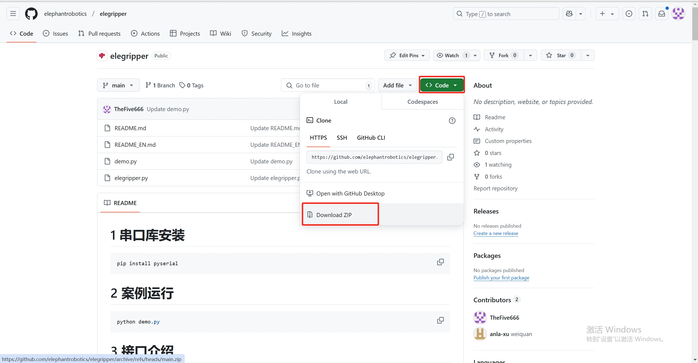

myGripper F100 force-controlled gripper
1 Product image

2 Specifications
| Name | myGripper F100 force-controlled gripper |
|---|---|
| Material | PC, PBT |
| Dimensions | 156X106X61mm |
| Process technology | Injection molding |
| Gripping range | 0-100 mm (default fingertip) |
| Repeatability | 0.5 mm |
| Service life | 300,000 openings and closings |
| Drive mode | Electric drive |
| Transmission mode | Gear + connecting rod |
| Dimensions | 158x105x55mm |
| Weight | 340 g |
| Rated load | 500g |
| Working voltage | 24V |
| Fixing method | Screw fixing |
| Environment requirements | Normal temperature and pressure |
| Control interface | RS485/IO control/button control |
| Applicable equipment | ER myCobot 320 series, ER Mercury series, ER myCobot Pro 600, ERmyCobot Pro 630, other general robots, ER myCobot Pro 450 |
3 Working principle
Driven by the motor, the finger surface of the manipulator makes linear reciprocating motion to achieve opening or closing. By setting the clamping torque, the impact of the workpiece is minimized, the positioning point is controllable, and the clamping is controllable.
4 Usage scenario
Experimental operation: In scientific research experiments, complete the grasping and moving of test tubes, utensils, etc. to ensure the safety and accuracy of the experiment. Educational demonstration: As a teaching tool, it helps students understand the principle of robot grasping and cultivate practical ability. Material handling: In simulated production lines or warehouses, materials of various specifications are handled to improve work efficiency.
5 Installation method
Use screws and washers to install the gripper connector to the end flange of the robot arm

Then use screws to install the gripper on the connector


Finally, use M8 aviation wire to connect the gripper and the robot arm

6 Python control method
Based on 450 terminal IO control
The IO control method can only control the gripper to fully open and close
from pymycobot import ElephantRobot
import time
mc=ElephantRobot("192.168.1.159",5001)
mc.start_client()
def gripper_open():
mc.set_digital_out(16,0)
mc.set_digital_out(17,1)
def gripper_close():
mc.set_digital_out(16,1)
mc.set_digital_out(17,0)
if __name__=="__main__":
gripper_open()
time.sleep(2)
gripper_close()
time.sleep(2)
Control based on USB to 485 module
Note: To control the gripper in this way, you need to connect one end of the M8 aviation cable connected to the gripper to the USB to 485 module. That is, one end of the M8 aviation cable with a plug is connected to the gripper, and the other end is connected to the USB to 485 module and the 24V power supply.
Wiring instructions:


Connect the 24V, GND, 485_A (T/R+, 485+), 485_B (T/R-, 485-) wires at the end of the gripper, a total of 4 wires, the power supply is a 24V DC regulated power supply or the 24V of the IO at the bottom of the 450, insert the USB port of the module into the USB port of the computer
485A connects to the 485 to USB module A+;
485B connects to the 485 to USB module B-;
24V connects to 24V DC regulated power supply positive pole/24V of IO at the bottom of 450;
GND connected to 24V DC regulated power supply negative pole/GND of IO at the bottom of 450
Driver library installation Click to download the driver library

Serial port dependency library installation
Execute the following command in the computer terminal to install the dependency library
pip install pyserial
API description
get_firmware_version()
Function: Get the main version number of the gripper firmware
Parameter: None
- Return:
(int)Firmware main version number
get_modified_version()
Function: Get the sub-version number of the gripper firmware
Parameter: None
- Return:
(int)Firmware sub-version number
get_gripper_Id()
Function: Get the gripper ID
Parameter: None
- Return:
(int)Gripper ID
get_gripper_baud()
Function: Get the baud rate of the gripper
Parameter: None
- Return:
(int)0-50: 1152001: 10000002: 576003: 192004: 96005: 4800
get_gripper_value()
- Function: Get the current position data of the gripper
- Parameter: None
- Return:
(int)The current position data of the gripper
get_gripper_status()
- Function: Get the current status of the gripper
- Parameter: None
- Return:
(int)0-30: Moving1: Stopped moving, no object was detected2: Stopped moving, object was detected3: After detecting that the object is clamped, the object falls
get_gripper_speed()
Function: Get the current speed of the gripper
Parameter: None
Return:
(int)The current speed of the gripper
get_gripper_P()
Function: Get the P value of the gripper PID
Parameter: None
Return:
(int)The P value of the gripper PID
get_gripper_I()
Function: Get the I value of the gripper PID
Parameter: None
Return:
(int)The I value of the gripper PID
get_gripper_D()
Function: Get the D value of the gripper PID
Parameter: None
Return:
(int)The D value of the gripper PID
get_gripper_cw()
- Function: Get the clockwise runnable error of the gripper
- Parameter: None
- Return:
(int)Clockwise runnable error of the gripper
get_gripper_cww()
- Function: Get the counterclockwise runnable error of the gripper
- Parameter: None
- Return:
(int)Counterclockwise runnable error of the gripper
get_gripper_mini_pressure()
- Function: Get the minimum starting force of the gripper
- Parameter: None
- Return:
(int)Minimum starting force of the gripper
get_gripper_io_open_value()
- Function: Get the opening angle of the gripper Io
- Parameter: None
- Return:
(int)Opening angle of the gripper Io
get_gripper_io_close_value()
- Function: Get the closing angle of the gripper Io
- Parameter: None
- Return:
(int)Get the closing angle of the gripper Io
get_gripper_queue_count()
Function: Get the amount of data in the current queue of the gripper
Parameter: None
- Return:
(int)The amount of data in the current queue of the gripper
get_gripper_vir_pos()
Function: Get the virtual position value of the gripper servo
Parameter: None
- Return:
(int)The virtual position value of the gripper servo
get_gripper_protection_current()
Function: Get the gripper clamping current
Parameter: None
- Return:
(int)The gripper clamping current
set_gripper_Id(value)
- Function: Set the gripper ID
- Parameters:
value:(int)Gripper ID, value range1-254
- Return:
(int)0-10: Failed1: Success
set_gripper_baud(value)
- Function: Set the gripper baud rate
- Parameter:
value:(int)Gripper baud rate, value range0-50: 1152001: 10000002: 576003: 192004: 96005: 4800
- Return:
(int)0-10: Failed1: Successful
set_gripper_enable(value)
- Function: Set the gripper enable state
- Parameter:
value:(int)Enable state, value range0-10: Disabled1: Enabled
- Return:
(int)0-10: Failed1: Success
set_gripper_value(value,speed)
- Function: Set the gripper to rotate to the specified position at the specified speed
- Parameter:
value:(int)Position, value range0-100speed:(int)Speed, value range1-100
- Return:
(int)0-10: Failed1: Success
set_gripper_calibration()
- Function: Set the gripper Zero Calibration
- Parameter: None
- Return:
(int)0-10: Failed1: Success
set_gripper_P(value)
- Function: Set the P value of the gripper PID
- Parameters:
value:(int)P value, value range0-254
- Return:
(int)0-10: Failed1: Success
set_gripper_I(value)
- Function: Set the I value of the gripper PID
- Parameters:
value:(int)I value, value range0-254
- Return:
(int)0-10: Failed1: Success
set_gripper_D(value)
- Function: Set the D value of the gripper PID
- Parameters:
value:(int)D value, value range0-254
- Return:
(int)0-10: Failed1: Success
set_gripper_cw(value)
Function: Set the clockwise running error of the gripper
Parameter:
value:(int)Error, value range0-16
- Return:
(int)0-10: Failure1: Success
set_gripper_cww(value)
Function: Set the counterclockwise running error of the gripper
Parameter:
value:(int)Error, value range0-16
- Return:
(int)0-10: Failure1: Success
set_gripper_mini_pressure(value)
- Function: Set the minimum starting force of the gripper
- Parameter:
value:(int)Minimum starting force, value range0-254
- Return:
(int)0-10: Failed1: Success
set_gripper_torque(value)
- Function: Set gripper torque
- Parameter:
value:(int)Torque, value range0-300
- Return:
(int)0-10: Failed1: Success
set_gripper_output(value)
- Function: Set gripper IO
Parameter:
value:(int)Gripper IO, value range0-30: out1 off,out2 off1: out1 on,out2 off2: out1 off,out2 on3: out1 on,out2 on
Return:
(int)0-10: Failed1: Success
set_gripper_io_open_value(value)
- Function: Set the gripper Io open position
- Parameter:
value:(int)position, value range0-100
- Return:
(int)0-10: Failed1: Success
set_gripper_io_close_value(value)
- Function: Set the gripper Io closed position
- Parameter:
value:(int)position, value range0-100
- Return:
(int)0-10: Failed1: Success
set_gripper_speed(speed)
- Function: Set the gripper speed
- Parameters:
speed:(int)speed, value range1-100
- Return:
(int)0-10: failed1: successful
set_abs_gripper_value(value,speed)
- Function: Set the gripper to rotate to the specified absolute position at the specified speed
- Parameters:
value:(int)position, value range1-100speed:(int)speed, value range1-100- Return:
(int)0-10: failed1: successful
set_gripper_vir_pos(value)
- Function: Set the virtual position value of the gripper servo
- Parameters:
value:(int)virtual position, value range0-100
- Return:
(int)0-10: Failed1: Success
set_gripper_protection_current(value)
- Function: Set the gripper gripping current
- Parameter:
value:(int)Virtual position, value range1-254
- Return:
(int)0-10: Failed1: Success
set_gripper_pause()
- Function: Set the gripper to pause motion
- Remarks: Only valid for set_abs_gripper_value()
- Parameter: None
- Return:
(int)0-10: Failed1: Success
set_gripper_resume()
- Function: Set the gripper to resume motion
- Remarks: Only valid for set_abs_gripper_value()
- Parameters: None
- Return:
(int)0-10: Failure1: Success
set_gripper_stop()
- Function: Set the gripper to stop moving and clear the message queue
- Remarks: Only valid for set_abs_gripper_value()
- Parameters: None
- Return:
(int)0-10: Failure1: Success
Case Procedure
from elegripper import Gripper
import time
if __name__=="__main__":
g=Gripper("COM27",baudrate=115200,id=14)##Fill in the actual serial port number, baud rate and gripper ID
print("The actual ID of the gripper is:",g.get_gripper_Id())
print(g.set_gripper_value(100,100))
time.sleep(2)
print(g.set_gripper_value(0,100))
time.sleep(2)